Diffusion Models
Author: Merrick Zheng | Date: Fall 2025
Part 0: Setup
This section covers the setup for using the DeepFloyd IF diffusion model for text-to-image generation. The DeepFloyd IF model is a two-stage model where the first stage produces 64x64 images and the second stage upscales them to 256x256.
Text Prompts and Embeddings
The following text prompts were used to generate embeddings for the project:
Generated Embeddings:
- 'a high quality photo'
- 'an oil painting of an old man with a long beard'
- 'an oil painting of people sitting around a campfire at night'
- 'a realistic portrait of a woman with flowing hair'
- 'a wide landscape of a river flowing through a valley'
- "a detailed painting of a lion's face"
- 'a sunset savannah with acacia trees'
- 'a large ancient stone statue'
- 'a busy marketplace with many people'
- 'a tall gothic cathedral'
- 'a dense forest canopy seen from above'
- 'a calm portrait of a middle-aged man'
- 'a tiger snarling with sharp teeth'
- 'a fluffy white puppy'
- 'a skull with glowing eyes'
- 'a medieval stone castle on a hill'
- 'a wolf howling'
- 'a peaceful snowy mountain landscape'
- "a woman's face looking forward"
- 'a bowl of ramen noodles'
- 'a human face smiling'
- 'a gothic stone tower at sunset'
- 'a foggy photograph of a tall bell tower'
- 'a watercolor painting of an old university tower'
- 'a realistic photograph'
- 'a detailed pencil sketch'
- 'a cinematic photograph with dramatic lighting'
- 'an oil painting of a snowy mountain village'
Random Seed
Random Seed Used: 100
This seed was used consistently across all subsequent parts of the project to ensure reproducibility.
Generated Images
Three prompts were selected to generate images with the DeepFloyd IF model. Images were generated using two different num_inference_steps values to compare the quality and relationship to the text prompts. Each image below contains all three generated images for the chosen prompts.
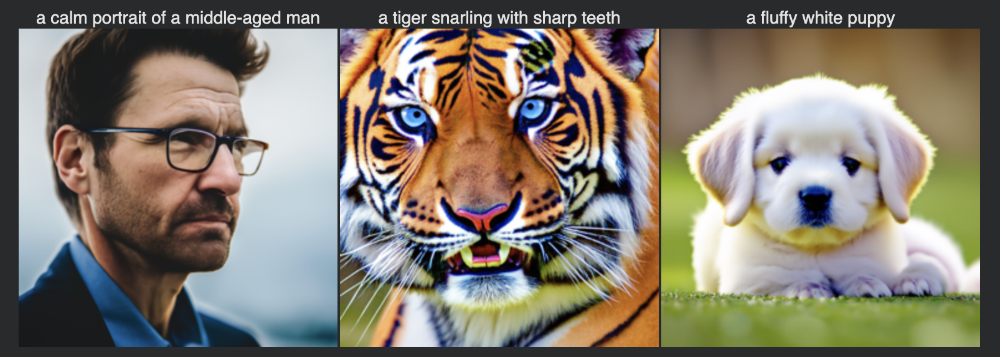
Contains all 3 chosen prompts
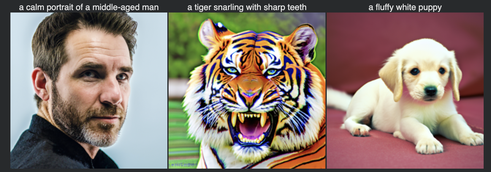
Contains all 3 chosen prompts
Reflection:
The images generated with num_inference_steps = 80 appear sharper and more detailed compared to those generated with num_inference_steps = 20. This is expected because more inference steps allow the diffusion model to perform more iterative denoising operations, resulting in higher quality outputs that better match the text prompts. The additional steps give the model more opportunities to refine details and reduce artifacts.
Part 1: Sampling Loops
In this part of the project, I implemented custom sampling loops that use the pretrained DeepFloyd denoisers to produce high-quality images. These sampling loops were then modified to solve different tasks such as inpainting and producing optical illusions.
1.1: Implementing the Forward Process
The forward process adds Gaussian noise to a clean image at a given timestep. The algorithm scales the original image and adds scaled noise, where the scaling factors depend on the cumulative product of noise coefficients (ᾱ_t). As the timestep increases, more noise is added and the image becomes progressively noisier.
alpha_bar_t = alphas_cumprod[t]
im_noisy = sqrt(alpha_bar_t) * im + sqrt(1 - alpha_bar_t) * epsCampanile at different noise levels showing the forward process:
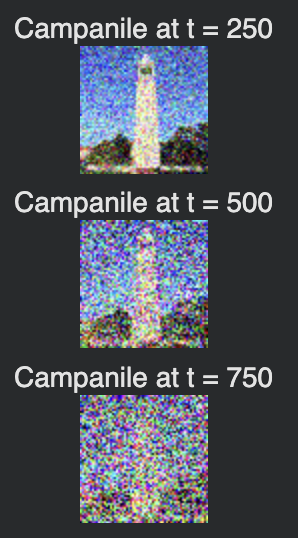
1.2: Classical Denoising
Gaussian blur denoising results for the noisy Campanile images at different timesteps:
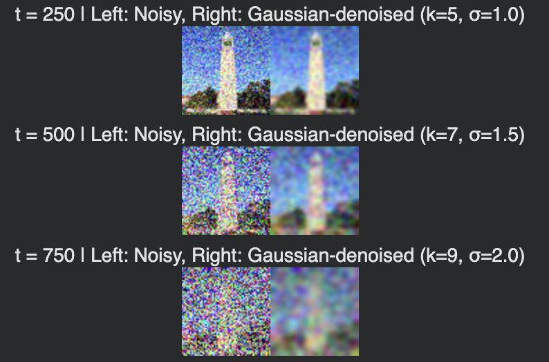
1.3: One-Step Denoising
The one-step denoising algorithm uses a pretrained UNet to predict the noise in a noisy image. Given the noisy image and timestep, the UNet outputs a noise estimate conditioned on the text prompt. We then invert the forward process formula to estimate the clean image by subtracting the predicted noise, properly scaled by the noise coefficients.
noise_est = stage_1.unet(im_noisy, t, encoder_hidden_states=prompt_embeds)
x0_est = (im_noisy - sqrt(1 - alpha_bar_t) * noise_est) / sqrt(alpha_bar_t)Noisy and denoised images using the pretrained diffusion model for timesteps t = [250, 500, 750]:
t = 250
t = 500
t = 750
1.4: Iterative Denoising
Iterative denoising (DDPM) performs multiple denoising steps in sequence, starting from a noisy image and gradually reducing noise at each timestep. At each iteration, the algorithm estimates the noise, predicts the clean image, and then computes the next less-noisy image using the DDPM update rule. This process continues until reaching timestep 0, resulting in a clean image. The key is computing the coefficients for combining the predicted clean image and current noisy image based on the noise schedule.
for i in range(i_start, len(timesteps) - 1):
noise_est = stage_1.unet(image, t, encoder_hidden_states=prompt_embeds)
pred_prev_image = compute_prev_step(image, noise_est, alpha_t, beta_t)Noisy Campanile every 5th loop of iterative denoising (gradually becoming less noisy):
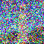
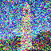
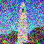
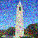
Final Predicted Clean Image (Iterative Denoising)

Comparison: Single Step vs Iterative vs Gaussian Blur
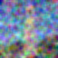
1.5: Diffusion Model Sampling
5 sampled images generated from random noise using the prompt "a high quality photo":
1.6: Classifier-Free Guidance (CFG)
Classifier-Free Guidance improves image quality by combining conditional and unconditional noise estimates. The algorithm runs the UNet twice: once with the text prompt (conditional) and once with an empty prompt (unconditional). The final noise estimate is computed by interpolating between these two estimates, with a guidance scale (γ) controlling the strength. When γ > 1, the model is pushed further in the direction of the conditional estimate, resulting in images that better match the prompt while maintaining diversity.
cfg_noise_est = uncond_noise_est + scale * (cond_noise_est - uncond_noise_est)
x0_est = (image - sqrt(1 - alpha_bar_t) * cfg_noise_est) / sqrt(alpha_bar_t)5 images of "a high quality photo" with CFG scale γ = 7:
1.7: Image-to-image Translation
Edits of the Campanile image at noise levels [1, 3, 5, 7, 10, 20] with the conditional text prompt 'a high quality photo':

Edits of 2 Test Images
Test Image 1:
Test Image 2:
1.7.1: Editing Hand-Drawn and Web Images
1 image from the web, edited at noise levels [1, 3, 5, 7, 10, 20]:

2 hand-drawn images, edited at noise levels [1, 3, 5, 7, 10, 20]:
Hand-Drawn Image 1:
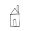
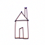
Hand-Drawn Image 2:
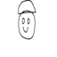
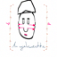
1.7.2: Inpainting
Inpainting (following RePaint) generates new content in masked regions while preserving the original image elsewhere. The algorithm starts from pure noise and performs iterative denoising with CFG. At each timestep, after computing the denoised image, it forces the pixels outside the mask to match the original image with the appropriate amount of noise added for that timestep. This ensures the unmasked regions remain unchanged while the masked region is filled with generated content that matches the prompt.
noisy_orig_t = forward(original_image, t)
image = mask * image + (1.0 - mask) * noisy_orig_tFor the custom images, I had to lower the CFG scale and increase the number of inference steps to achieve better results.
The Campanile inpainted:
2 custom images edited with inpainting:
Image 1:

Image 2:
1.7.3: Text-Conditional Image-to-image Translation
Edits of 2 test images using text-conditional image-to-image translation at noise levels [1, 3, 5, 7, 10, 20]:
Test Image 1:
Test Image 2:
1.8: Visual Anagrams
Visual anagrams create images that appear as one thing when viewed normally and another when flipped upside down. The algorithm computes two noise estimates: one from prompt p1 on the normal image, and one from prompt p2 on the vertically flipped image. After flipping the second noise estimate back, the two estimates are averaged. This creates a single image that incorporates features from both prompts, with different features dominating depending on orientation due to the averaging process.
eps1 = cfg_noise(x, t, p1)
eps2_flip = cfg_noise(flip(x), t, p2)
eps = 0.5 * (eps1 + flip(eps2_flip))2 illusions that change appearance when flipped upside down:
Illusion 1
Prompts: p1 = "a detailed painting of a lion's face", p2 = "a sunset savannah with acacia trees"
Illusion 2
Prompts: p1 = "a medieval stone castle on a hill", p2 = "a wolf howling"
1.9: Hybrid Images
Hybrid images combine two different prompts by mixing their frequency components. The algorithm computes noise estimates for both prompts using CFG. It then applies Gaussian blur to extract low-frequency components from the first prompt's noise estimate. High-frequency components are extracted from the second prompt by subtracting its blurred version from the original. The final noise estimate combines low frequencies from prompt 1 with high frequencies from prompt 2, creating an image that looks like one prompt from far away (low frequencies) and another up close (high frequencies).
eps1_low = gaussian_blur(eps1, kernel_size=33, sigma=2.0)
eps2_high = eps2 - gaussian_blur(eps2, kernel_size=33, sigma=2.0)
eps = eps1_low + eps2_high2 hybrid images combining low and high frequency components from different text prompts:
Hybrid 1
Prompts: "a woman's face looking forward" + "a wolf howling"

Hybrid 2
Prompts: "a gothic stone tower at sunset" + "a wide landscape of a river flowing through a valley"

Part 2: Training Diffusion Models
2.1.2: Using the UNet to Train a Denoiser
Visualization of the noising process using σ = [0.0, 0.2, 0.4, 0.5, 0.6, 0.8, 1.0]:
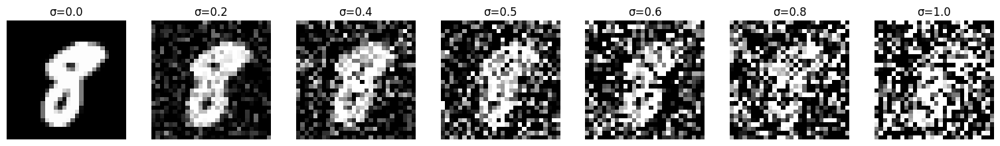
2.1.2.1: Training Results
Training loss curve for σ = 0.5:
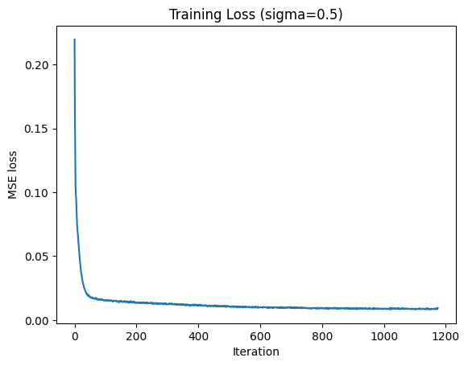
Sample results on the test set with noise level 0.5:
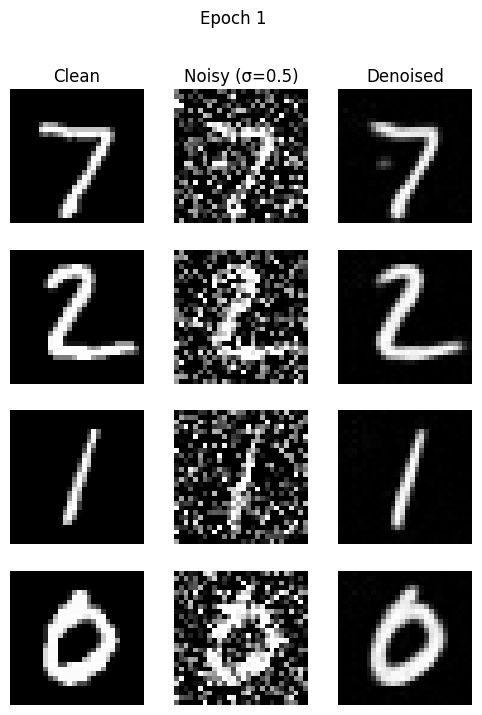
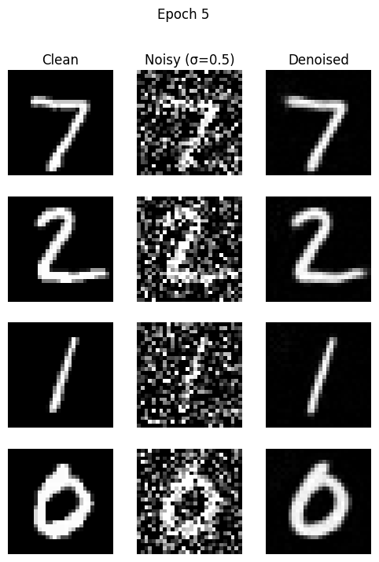
2.1.2.2: Out-of-Distribution Testing
Sample results on the test set with out-of-distribution noise levels σ = [0.0, 0.2, 0.4, 0.5, 0.6, 0.8, 1.0]. The model was trained on σ = 0.5:
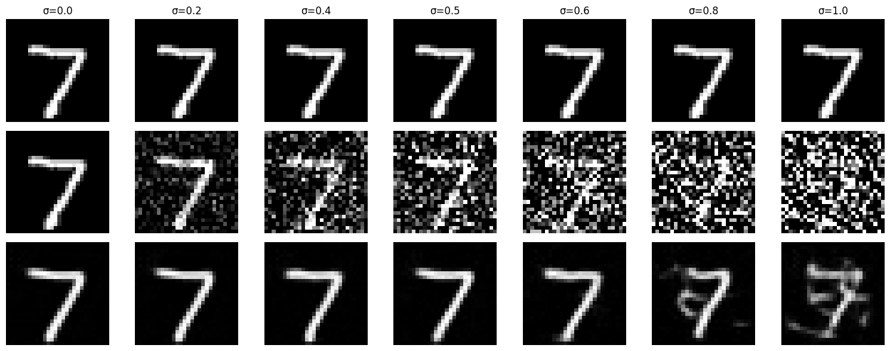
2.1.2.3: Denoising Pure Noise
Training loss curve for denoising pure noise:
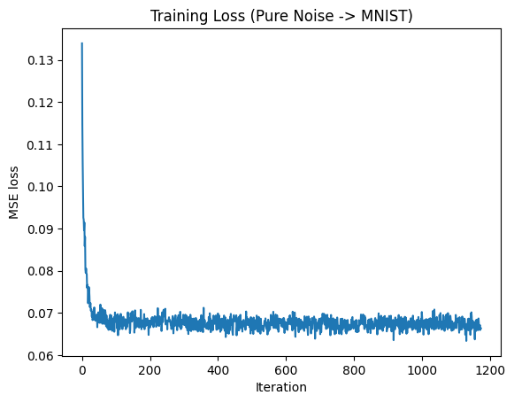
Sample results generated from pure noise:
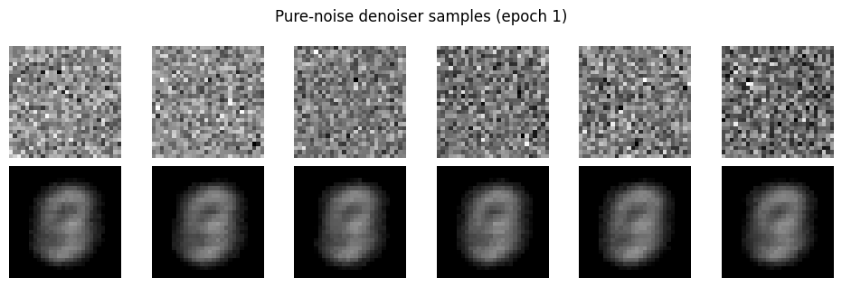
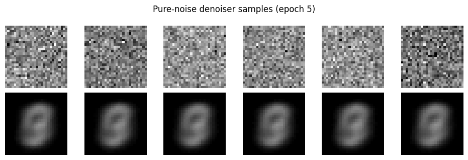
Observations:
The generated outputs show blurry, averaged versions of the training digits rather than distinct individual digits. This occurs because the MSE loss function causes the model to learn to predict the point that minimizes the sum of squared distances to all training examples, which corresponds to the centroid or mean of the training data. Since the model is trained on all digits (0-9), it learns to predict an average digit that blends features from all classes, resulting in indistinct, blurred outputs that don't clearly represent any specific digit.
2.2: Training the UNet
Training loss curve for the time-conditioned UNet over the whole training process:
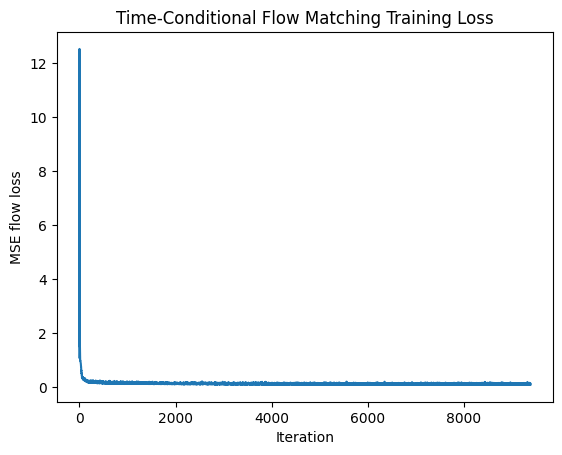
2.3: Sampling from the UNet
Sampling results from the time-conditioned UNet for 1, 5, and 10 epochs:
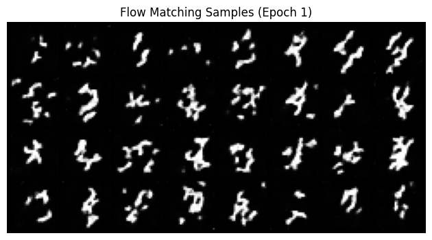
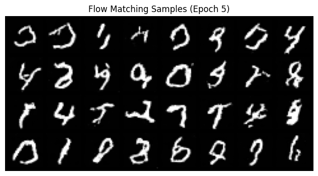
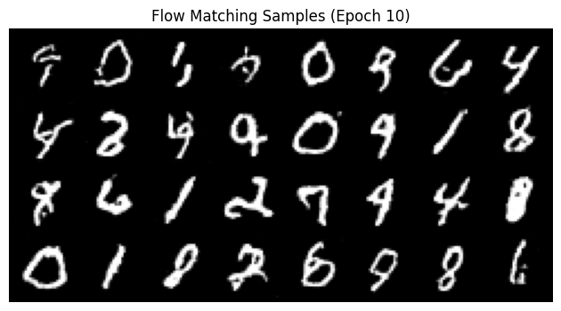
2.5: Training the UNet (Class-Conditioned)
Training loss curve for the class-conditioned UNet over the whole training process:
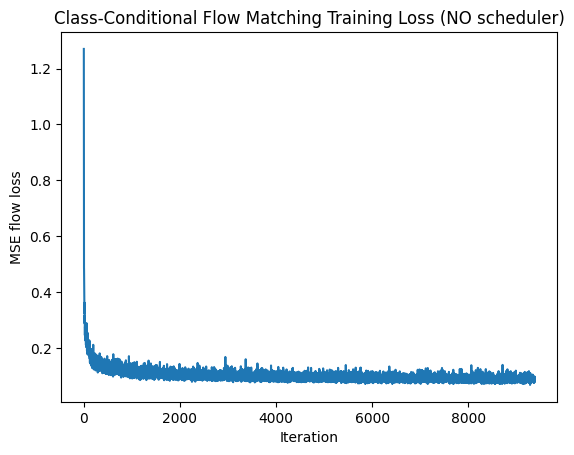
2.6: Sampling from the UNet (Class-Conditioned)
Sampling results from the class-conditioned UNet with classifier-free guidance (γ = 5.0) for 1, 5, and 10 epochs. 4 instances of each digit (0-9) are generated:
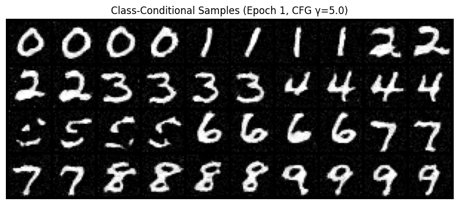
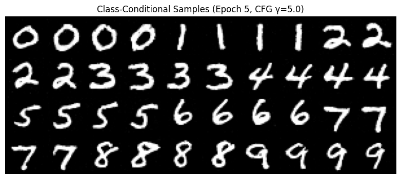
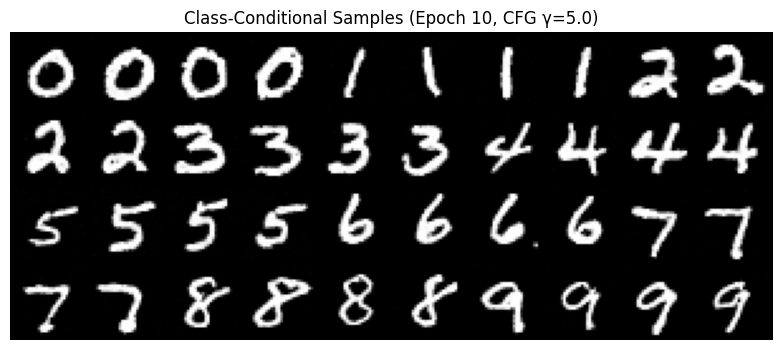
Results Without Learning Rate Scheduler
To maintain the same performance after removing the exponential learning rate scheduler, I used a constant learning rate throughout training. The exponential scheduler gradually reduces the learning rate over epochs, which helps with convergence. To compensate, I set a lower constant learning rate (e.g., 5e-3 instead of 1e-2) to prevent overshooting in later epochs while still allowing the model to learn effectively. Alternatively, training for additional epochs with a constant rate can achieve similar convergence behavior. The sampling results show that class-conditioning with classifier-free guidance produces clear, distinct digits for each class, demonstrating that the model successfully learns to generate class-specific images.